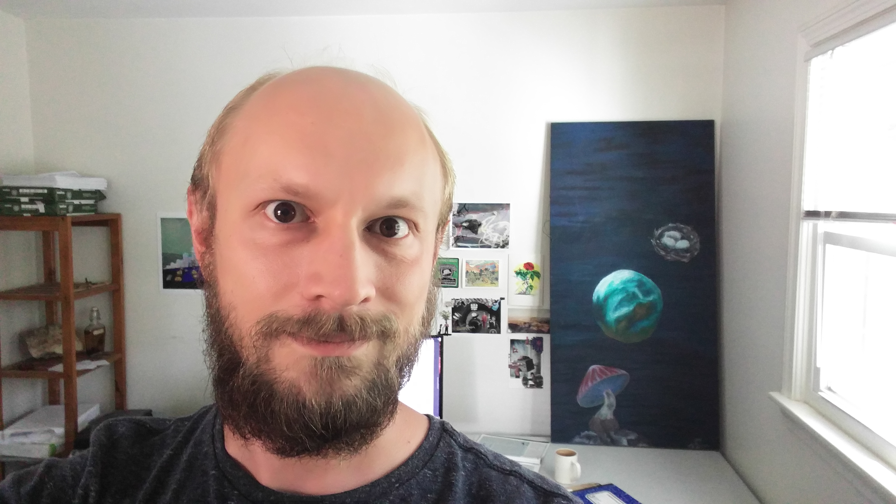
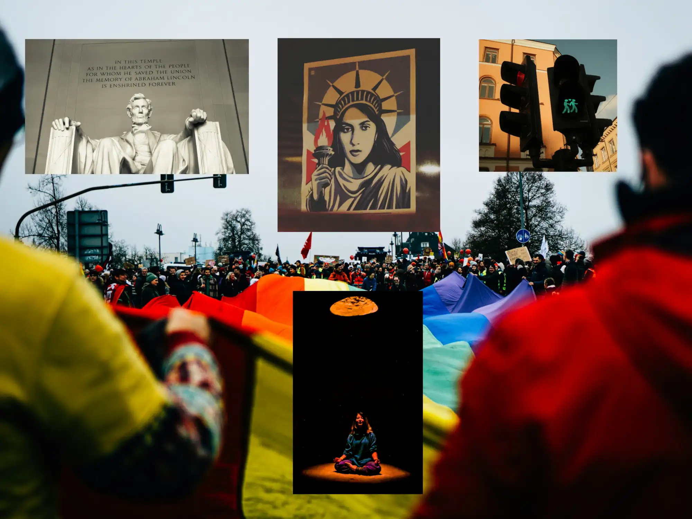

Summary
I am a web designer, artist, poet and IT guy. I have job experience in IT, food service, retail, and fulfillment centers. I have been making websites with HTML, CSS and digital imagery since 2011 and with JavaScript since 2019.
I am the creator of The Discordian Postcard Conspiracy, mail art/poetry/activism project, the Very Small Ocean environment and climate change website, The Key of Sparrows fortune telling / brainstorming / creativity system, the Lexicon System eye-gaze communications board for people with motor neuron disease, the Easy Em static website framework, and the blog Lost in Mist.
